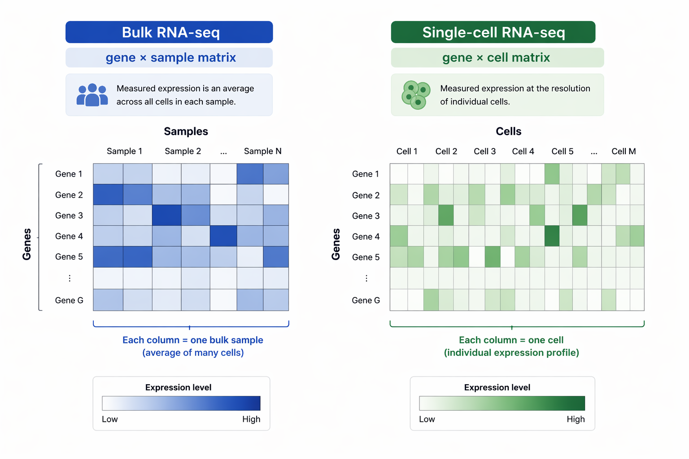
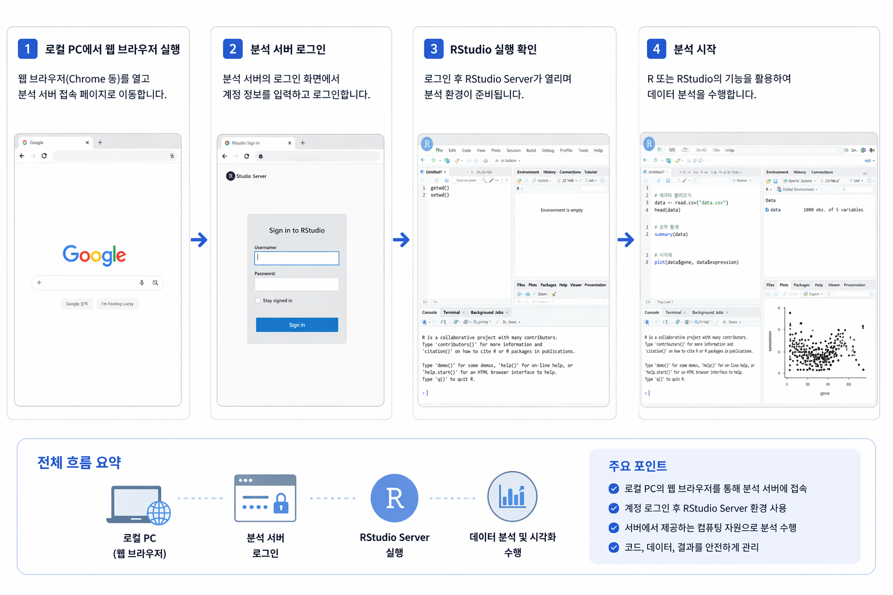

scRNA-seq의 기본 개념을 이해하고, 웹 기반 RStudio Server를 통해 분석 환경에 접속한 뒤 NAS 데이터 저장소를 활용하여 실습을 시작합니다.
| 항목 | Bulk RNA-seq | Single-cell RNA-seq |
|---|---|---|
| 단위 | 샘플 전체 | 개별 세포 |
| 특징 | 평균 발현 | 이질성 분석 |
| 결과 | gene × sample | gene × cell |

Bulk RNA-seq는 평균 발현을 측정하지만, scRNA-seq는 세포별 발현을 분석합니다.
filtered_feature_bc_matrix/
├── barcodes.tsv.gz
├── features.tsv.gz
└── matrix.mtx.gz
http://server_ip:8787
브라우저에서 접속 후 ID / Password 입력

접속 → 로그인 → RStudio → 분석 흐름
/nas/username/scRNA_project/
getwd()
setwd("/nas/username/scRNA_project")
getwd()
library(Seurat)
data_dir <- "/nas/username/scRNA_project/sample1/filtered_feature_bc_matrix"
counts <- Read10X(data.dir = data_dir)
obj <- CreateSeuratObject(counts = counts)
obj